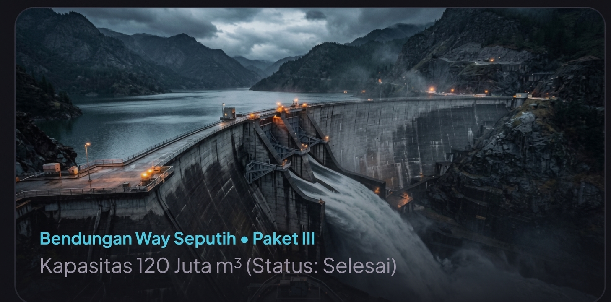
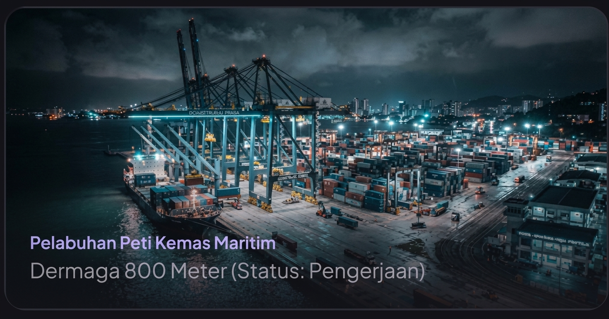
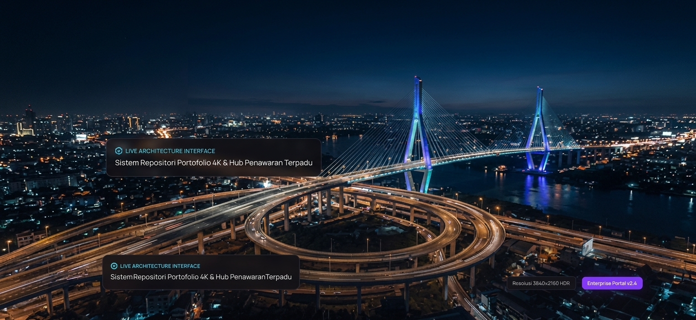
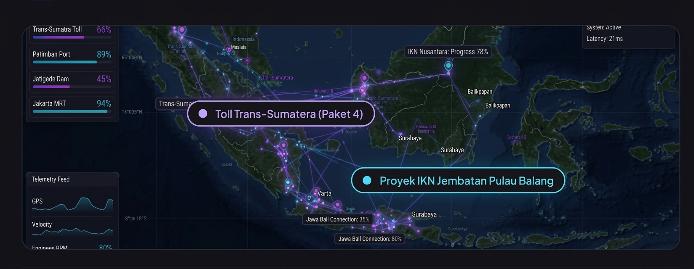

Galeri Interaktif Mega Proyek
Filter multi-sektor: Pra-Konstruksi, Pengerjaan, Operasional


Tipe Infrastruktur Terpopuler:JembatanJalan TolIrigasi
Lihat 48 Proyek ›
Rekonstruksi arsitektur digital dan platform company profile enterprise untuk PT Konstruksi Prima Perkasa Tbk, menghadirkan showcase mega-proyek interaktif, visualisasi data alat berat, serta portal tender digital yang aman.

Dirancang dengan presisi untuk memenuhi kepatuhan tata kelola B2B, transparansi kemitraan konsorsium, dan kemudahan evaluasi tender.
Filter multi-sektor: Pra-Konstruksi, Pengerjaan, Operasional


Kalkulator Biaya Konstruksi Cepat
Kepatuhan Standar Mutu Internasional
Pemantauan 240+ Unit Alat Berat Melalui IoT GPS

Mengubah cara konglomerat konstruksi mempresentasikan kapabilitas teknis dan menjalin kemitraan bernilai triliunan rupiah.
Meningkatkan kredibilitas institusi di mata kementerian, investor institusional, dan mitra internasional melalui representasi visual mutakhir berkepribadian kokoh.
Standar Keterbukaan IDXOtomatisasi intake dokumen kualifikasi pengadaan dan RFQ yang mengeliminasi friksi birokrasi penawaran lintas divisi hingga 65% lebih singkat.
Alur Disposisi KilatEksekusi sistem Next.js headless berkecepatan sub-detik dengan enkripsi level perbankan untuk proteksi data tender bernilai strategis tinggi.
SLA 99.98% BergaransiHasil audit performa triwulan pertama pasca peluncuran resmi portal infrastruktur terpadu.
Akumulasi estimasi nilai proyek yang masuk melalui modul RFQ portal.
Efisiensi pengajuan pertama hingga penyerahan proposal teknis konsorsium.
Keandalan jaringan server enterprise grade tanpa maintenance downtime tender.
“VISIORA berhasil mengemas kompleksitas operasi sipil kami yang luas menjadi pengalaman digital yang sangat berwibawa, jernih, dan aman. Kehadiran portal baru ini secara langsung mengangkat reputasi kami dalam proses kualifikasi tender infrastruktur strategis nasional.”
Kolaborasikan visi industri Anda dengan eksekusi desain arsitektural dan teknologi kelas wahid bersama tim konsultan VISIORA.